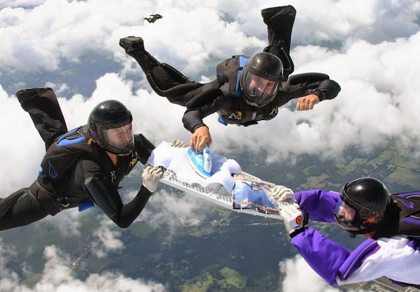

Extreme Ironing
Extreme Ironing (also called EI) is an extreme sport in which people take ironing boards to remote locations and iron items of clothing. According to the Extreme Ironing Bureau, Extreme Ironing is "the latest danger sport that combines the thrills of an extreme outdoor activity with the satisfaction of a well-pressed shirt."

Despite how ridiculous the sport sounds, many take extreme ironing seriously. People even created organizations to handle various challenges and establish rules when participating in them. An example of this is the Extreme Ironing Bureau, also known as EIB, which promotes and regulates the sport. Thanks to the EIB, the rise of the sport’s popularity even caused world championships to take place as well.
History
E xtreme Ironing was invented in 1997 in Leicester, England, by resident Phil Shaw in his back garden. Shaw had a number of chores to do, including ironing his shirts. Preferring the idea of an evening out rock climbing, he decided to combine the two activities into a new extreme sport. In June 1999, Shaw, who uses the nickname "Steam", embarked on an international tour to promote the activity. The stops included the United States, Fiji, New Zealand, Australia and South Africa. An encounter with German tourists in New Zealand led to the formation of a group called "Extreme Ironing International", and the German Extreme Ironing Section or GEIS. As extreme ironing has branched off, the conditions can gain in extreme activity. For example, a branch of ironing has been developed that includes both bungee jumping and well-pressed clothing. Bungee ironing is what some would call the ultimate in the thrill of Extreme Ironing. 
World Championships
T he 1st Extreme Ironing World Championships was the inaugural championship for the British sport of Extreme Ironing. It was held in Valley, Bavaria, a small village near Munich in the district Miesbach, and it was host to competitors from ten nations, comprising 12 teams. The Championship Sections were:
- Urban. Involved ironing in/on/around a broken down car.
- Water. A fast flowing river was the location for this station. Competitors could use surfboards, canoes or rubber rings to help them.
- Forest.Ironing at the top of a tree.
- Lauda.A purpose built climbing wall, which ironists had to climb and iron a T-shirt.
- Freestyle.The section where "anything goes".
The GB1 and GB3 teams managed to win the gold and bronze team medals. German and Austrian competitors picked up the individual prizes. 1st Place Chrissy Quaid. 2nd Place Jade Dunn. 3rd Place Becca Rogers. They were judged on their creative ironing skills as well as the creases in the clothing.